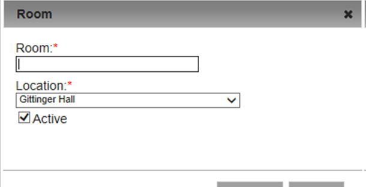
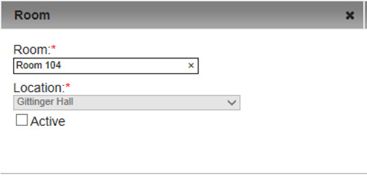

Work with Rooms
Within Locations, you can specify a room, which is a further definition/clarification of where an event is to take place. For example, if you specify a building as the event location for a chemistry lab practical, a room could specify a specific lab room in the building for that event. Your Master Calendar parameter settings control whether the room field shows for users under a Location. See Also: Default Page Configuration Settings.

|
Tip:You should identify a room with a name or phrase that explains what it is, for example, desk, work area, stage, hall, pop-up booth, and so on. “Rooms” is the default label for rooms. To change this label to better suit your organization’s business needs, see Setting Default Behavior for Master Calendar.
|
This topic guides you in adding rooms, activating and de-activating rooms, editing rooms, and deleting rooms.
Setting Up a New Room

|
Note: You can add an room only to an active event location. If you need to activate an event location before you can add a room to it, see Working With Rooms.
|
1. On the Admin menu, point to Configuration >Rooms. The page opens on the Active tab.
2. On the Locations dropdown list, select the location to which you wish to add the room. The page refreshes to list all currently active rooms for the selected location.

3. Under Actions, click Add. The Room dialog box opens as shown below, where you name the room. Users will then be able to select this item from a drop-down list for the Location field during the booking process.

4. In the Room field, enter a name or description for the room.
|
|
Tip:You can change the Location as needed using the Location field dropdown.
|
6. Click Save. The room is added as an active location in Master Calendar.
Working With Existing Rooms
1. On the Admin menu, point to Configuration >Rooms. The rooms page opens on the Active tab.
2. To activate or de-activate a room, choose the Active or Inactive tab.
- In the Locations field, select the location for which the rooms are being activated or de-activated. The list then displays all active or inactive rooms for the selected location.
- Select the room that you wish to work with.
- Under Actions, click Edit. The Room dialog box opens.

- Use the Active checkbox to control whether users can choose this room from the dropdown list during the booking process.
- Click Save. Your changes take effect immediately.
3. To change the name or URL for a room, from the Locations dropdown on the Active or Inactive tab, select the location for which you wish to edit rooms. The list updates to show the Locations's rooms.
- Select the room that you wish to edit.
- Under Actions, click Edit. The Room dialog box opens.
- Edit the name of the room, its location, or both.
- Click Save to save your edits.
4. To delete a room, from the Locations dropdown on the Active or Inactive tab, select the location for which you wish to edit rooms. The list updates to show the Locations's rooms.

|
Concept:You can delete both active and inactive rooms. If you delete an active event room, any current events that use this room are not affected. The deletion simply means that going forward, the room is not available for use.
|
- Select the room that you wish to delete. To select all rooms on the currently opened page for deletion in a single step, select Room, for example, Room. If you have multiple pages of rooms to delete, you must repeat this entire process on each page.
- Under Actions, click Delete. A message prompts you to confirm that you want to delete all the selected rooms.
- Click OK in the message. A message confirms the deletion.
- Click OK. The Active tab or Inactive tab is updated to reflect the deletion.